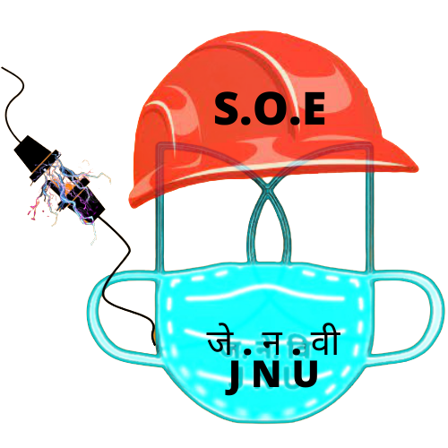

|  | School of Engineering, JNU.The collage without building. |
School of Engineering offers a five year dual degree programme with BTech in an Engineering discipline, and a Master’s (MS/MTech) programme with specializations in Social Sciences/Humanities/Science/Technology from July 2018.
The thrust areas of the BTech programme will cover most of the well-known disciplines of Sciences and Technology.
The courses of this programme will encompass both basic Sciences and Engineering including various options such as Communications, Environment, Electronics and Information Technology.
JNU prides itself as the hub of Social and Economic ideas that shape our academia and industry. JNU is also on the forefront of research in Sciences, International Studies, Languages and Linguistics. With these strengths, JNU hopes in conjunction with Technology to enable the students to learn and apply technology to real life problems associated with the Indian society. The five year dual degree programme is one of the very few programmes in the country, where the student would acquire skills in Technology and its application to a sustainable development of society.
In the first half of the dual degree programme, the students would need to do compulsory foundation courses in the areas of basic sciences, humanities, social sciences and engineering sciences apart from their departmental requirements in the core engineering discipline. The students will have options of choosing open category electives from a pool of courses to develop a broad inter-disciplinary knowledge base. This will provide them with an opportunity to do MS/MTech in an area outside their parent discipline. The dual degree programme in JNU would be novel in the sense that it would extend an opportunity to the students, especially in their fourth and fifth years of their programme to involve themselves in projects/dissertations and courses on Humanities, International Studies, Sciences, Languages, Linguistics and Social Sciences, in order to understand the demands of such disciplines and acquaint themselves with the frontier areas.
Also, the proposed programme would offer beyond these goals a special sets of skills that makes engineers sensitive to their social and environmental responsibility. The programme would emphasize further that generating returns for the society and the larger community is also very important. With such engaging and holistic learning approach, the students can have the opportunity to become better problem solvers.
The five dual degree programmes are as follows:
BTech in Computer Science and Engineering and MS/MTech in Social Sciences/Humanities/Science/Technology (Structure , Syllabus)
BTech in Electronics and Communication Engineering and MS/MTech in Social Sciences/Humanities/Science/Technology (Structure , Syllabus)
To be floated in future:
BTech in Civil and Environmental Engineering and MS/MTech in Social Sciences/Humanities/Science/Technology (Structure , Syllabus)
BTech in Chemical Engineering and MS/MTech in Social Sciences/Humanities/Science/Technology (Structure , Syllabus)
BTech in Mechanical Engineering and MS/MTech in Social Sciences/Humanities/Science/Technology (Structure , Syllabus)